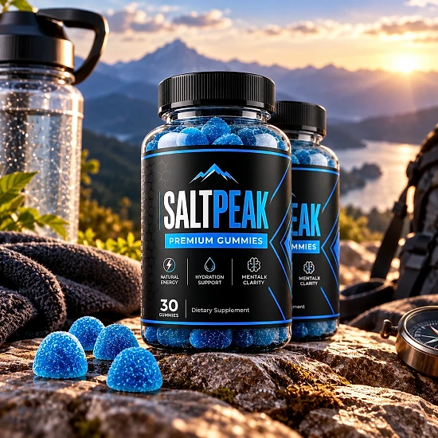
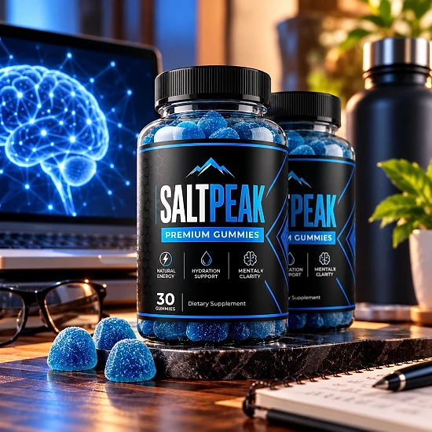
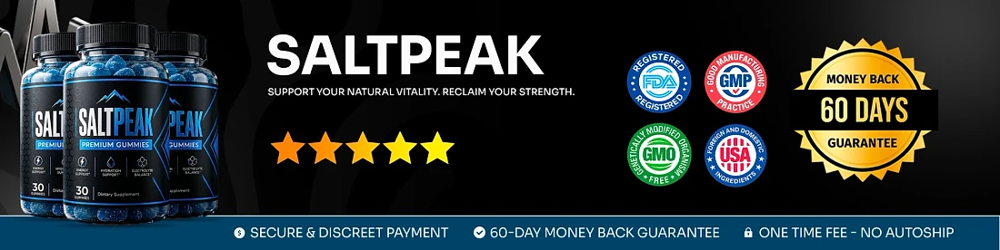

What Is Saltpeak And How Does It Work?
Saltpeak is a dietary supplement in gummy form made for men who want to support their energy, stamina and everyday vitality. Each bottle contains 30 premium gummies, and the label suggests one gummy per day, so a bottle lasts about a month.
The official website describes Saltpeak as a natural formula that combines botanical extracts and nutrients chosen to support male virility, drive and energy. Instead of several pills, the routine is a single chewable gummy.
How is it designed to work? According to the brand, the core of the formula is a combination of Muira Puama, Maca and Catuaba, three plants traditionally used in men's vitality formulas, which the website says work together to support circulation and physical endurance. Ashwagandha is included for the body's response to everyday stress, while green tea extract and a small amount of caffeine are added for alertness.
The Supplement Facts panel also lists L-Arginine, Tribulus Terrestris and Horny Goat Weed in the same 82 mg proprietary blend. The front of the bottle mentions energy support, hydration support and electrolyte balance.
The label states that Saltpeak is made in the USA with globally sourced ingredients and produced in a GMP facility. Orders are processed by BuyGoods.
Results may vary from person to person, and the brand recommends using it consistently alongside good sleep, balanced meals and regular activity. The website does not promise a fixed timeline, so it is fair to give any daily routine several weeks before judging how you feel.
Saltpeak is a dietary supplement and is not intended to diagnose, treat, cure, or prevent any disease.
Saltpeak Ingredients
The Supplement Facts panel shown on the official website lists an 82 mg proprietary blend in every gummy:
Muira Puama Extract: an Amazonian plant traditionally used in men's vitality formulas.
Maca Extract: a Peruvian root often associated with energy and stamina.
Catuaba Extract: a Brazilian bark used as a traditional tonic.
Green Tea Extract and Caffeine: included for alertness and daily energy.
Ashwagandha: an adaptogen known for its role in the response to everyday stress.
L-Arginine, Tribulus Terrestris and Horny Goat Weed: an amino acid and two botanicals common in male vigor formulas.
The label does not show the amount of each ingredient. The gummy base is made with corn syrup, cane sugar, water, apple pectin, sorbitol, natural flavors, citric acid and sodium citrate, with 10 calories and 3 g of sugar per gummy.
The descriptions above reflect how these ingredients are generally known, not proven results. Because the blend amounts are not disclosed, the doses cannot be compared with those used in published research, so check the bottle you receive against the label shown on the official website and bring it to your doctor if you take other supplements.
Saltpeak Side Effects
The official website describes Saltpeak as made with naturally derived ingredients and does not list specific side effects. It also calls it an active, stimulating supplement, and recommends that people under 18 or with pre-existing health conditions, especially heart problems or high blood pressure, consult a healthcare professional before use.
The label adds that anyone who is pregnant or nursing, takes medications or has a medical condition should talk to a doctor first, and that use should stop if any adverse reaction occurs.
Some ingredients deserve extra attention. L-Arginine and Horny Goat Weed can affect circulation, so men who take blood pressure medicine, blood thinners or prescription drugs for sexual performance should show the label to their doctor. Ashwagandha may interact with thyroid medication and sedatives, and the gummy contains caffeine, so people sensitive to stimulants should keep an eye on coffee and energy drinks.
Each gummy also contains 3 g of added sugar, which matters for anyone watching sugar intake. If you notice any unusual reaction, stop using it and seek medical advice, and bring the bottle to your appointment so your doctor can read the full label.
Saltpeak Dosage
The suggested use on the label is simple: take one gummy once daily as a dietary supplement, or as directed by a qualified healthcare professional. Each bottle contains 30 gummies, which is about a one-month supply.
The official FAQ recommends chewing the gummy in the morning or about 30 minutes before your main activities or workouts. Because the formula contains caffeine, taking it earlier in the day may also help people who are sensitive to stimulants sleep well at night.
There is nothing to mix or swallow, which makes the routine easy to keep. Taking it at the same time every day helps with consistency, and the brand suggests that the ingredients work best with regular use over several weeks.
Do not take more than one gummy a day. The label advises storing the bottle at room temperature, 59 to 86 °F (15 to 30 °C), keeping it tightly closed and out of reach of children, and not using it if the seal under the cap is broken or missing.
Saltpeak works best as part of a healthy routine with balanced meals, good sleep, regular exercise and proper hydration.
Saltpeak – Refund Policy
Every order of Saltpeak is covered by a 60-day Results or Refund Guarantee counted from the date of purchase, which gives you time to try the gummies and decide whether they are right for you.
According to the refund policy on the official website, there is a minimum trial period of 30 days, and the return process must start within 60 days of the purchase date. Only sealed bottles are eligible, shipping and customs fees are not refunded, return shipping is paid by the customer, and a 20% restocking fee is deducted from the total.
Step 1 – Request the authorization code: email the support team at contact@customercs.com to start the return. The team usually replies within 48 business hours.
Step 2 – Send the bottles back: follow the return instructions you receive with the code.
Step 3 – Receive your refund: once the returned items are received and verified, the refund goes to the original payment method and may take 5 to 10 business days to appear on your statement. You will receive a confirmation email.
Keep your unopened bottles sealed until you are sure about the product, and save your order confirmation email from BuyGoods so you have your order number ready.
Saltpeak Customer Reviews
-
Michael Thompson — Houston, TXVerified Purchase – 6 Bottles
“If it wasn’t for Saltpeak, I’d still be feeling stuck, overwhelmed, and wondering if I’d ever regain my confidence and vitality… But just a few weeks in, everything changed. Thanks to Saltpeak, I’ve reclaimed my sense of purpose and strength, and my relationships have never been better. It’s like having a roadmap to the man I always knew I could be!”
-
James Miller — Denver, COVerified Purchase – 6 Bottles
“I was skeptical at first, but Saltpeak completely turned my life around. Before, I felt like I was constantly battling low energy, self-doubt, and a lack of direction… Now, I wake up each day with focus and confidence, ready to take on anything. Saltpeak made me feel unstoppable again!”
-
Robert Anderson — San Diego, CAVerified Purchase – 6 Bottles
“Before Saltpeak, I felt like I’d lost my edge—always tired, frustrated, and unsure of what steps to take next. But within weeks, everything started to shift. Thanks to Saltpeak, I’m more energized, focused, and driven than I’ve been in years. It’s the ultimate tool for men who refuse to settle!”
Saltpeak – Where To Buy
Saltpeak is sold through its official website, where orders are completed through a secure checkout from BuyGoods, an established online retailer. According to the FAQ, every purchase is a one-time payment with no auto-ship, recurring charges or hidden fees.
Bottles listed by unknown third-party sellers may look the same, but there is no way to verify their origin or how they were stored, which raises real concerns about quality and safety. Purchases made outside the official source may not be covered by the 60-day guarantee.
That is why most buyers prefer to order Saltpeak directly from the official website. Going to the source means receiving the authentic original product, made in the USA, with access to the support team and the full guarantee.
Before completing your order, make sure you are on the official Saltpeak website to avoid counterfeit products. Checking the web address in your browser before you pay takes only a moment and helps protect your order.
To ensure you’re getting the authentic product, most users choose to visit the official website.
Is Saltpeak A Scam?
Based on what the official website and the label show, Saltpeak does not appear to be a scam. It is a real gummy supplement for male energy and vitality, sold through BuyGoods, an established retailer.
Several points speak in its favor: the Supplement Facts panel is published, the label names a distributor (Instituto Experience, Lakeland, Florida) with a phone number and a support email, the product is made in the USA in a GMP facility, and the refund rules are written out in detail on the website.
There are also points to keep in mind. The ingredients share a small 82 mg proprietary blend, so the amount of each one is not disclosed. The sales page talks about six ingredients while the label lists nine. The refund policy is stricter than many: only sealed bottles qualify, return shipping is paid by the customer, and a 20% restocking fee applies.
For men looking for a simple daily gummy to support energy and stamina, Saltpeak may be worth considering, ideally ordered from the official website and discussed with a doctor by anyone who takes medication or has heart or blood pressure concerns, and used as directed on the label.
For those who want to verify product details or check current availability, the official Saltpeak website remains the safest option.

Check Availability On Official Website
